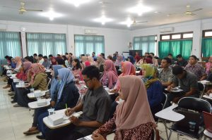

Persiapan Lulusan, Universitas Jember Hadirkan Perusahaan Besrskala Nasional
Rabu, 10 November 2018
Pusat Pengembangan Karir yang dikoordinasikan oleh Lembaga Pengembangan, Pembelajaran dan Penjaminan Mutu (LP3M) Universitas Jember menyelenggarakan Diskusi Interaktif “Kebutuhan Kompetensi dan Skill di Dunia Kerja Pada Perusahaan Berskala Nasional di Indonesia” dan menghadirkan narasumber yang merupakan perwakilan dari PT Telkomsel Kanwil Jawa-Bali, PT Indospring Tbk, dan PT Bank Syariah Mandiri, pada Rabu (17/10) di Aula lt. 2 LP3M Universitas Jember. Menurut Ketua Panitia Diskusi Interaktif, Dr. Novi Puspitasari, SE., MM., dalam sambutannya menyatakan bahwa
kegiatan ini merupakan salah satu program Pusat Pengembangan Karir LP3M Universitas Jember yang didesain khusus
untuk memberikan informasi langsung kepada
para mahasiswa dan para lulusan tentang bagaimana dan apa yang dibutuhkan perusahaan terkait rekrutmen
dan kualifikasi karyawan yang dibutuhkan. “Diskusi kali ini membahas mengenai pola rekrutmen, lulusan bidang apa saja yang dibutuhkan, berapa kebutuhan dalam setahun, serta pada periode kapan saja perusahaan merekrut karyawan. Sehingga para mahasiswa bisa benar-benar memperhatikan dan mempersiapkan diri nantinya ketika lulus,” tutur Dosen Fakultas Ekonomi dan Bisnis Universitas Jember tersebut.
 Lebih lanjut, Novi Puspitasari menyebutkan target yang akan dicapai dengan adanya acara ini yaitu para lulusan
dapat segeratertampung di dunia kerja dengan jeda waktu tidak terlalu lama yaitu berkisar dua hingga tiga bulan.“Kami berharap mahasiswa dapat mengikuti acara diskusi ini dengan baik dan semakin terbuka mempersiapkan diri untuk berkompetisi dengan lulusan kampus lainnya dalam mengisi lapangan kerja yang diperlukan oleh perusahaan,” tambah Novi Puspitasari.Diskusi dibuka langsung oleh Sekretaris LP3M, Dr. Ir. Sholeh Avivi dan dihadiri oleh sebanyak 100 peserta yang merupakan para mahasiswa dan lulusan Universitas Jember. Selain kegiatan diskusi ini, Pusat Pengembangan Karir LP3M Universitas Jember kedepannya akan mengadakan program lanjutan berupa kegiatan mengenaibekal bagi mahasiswa dalam berwirausaha dengan mendatangkan narasumber yang merupakan pengusaha sukses dari berbagai sektor.